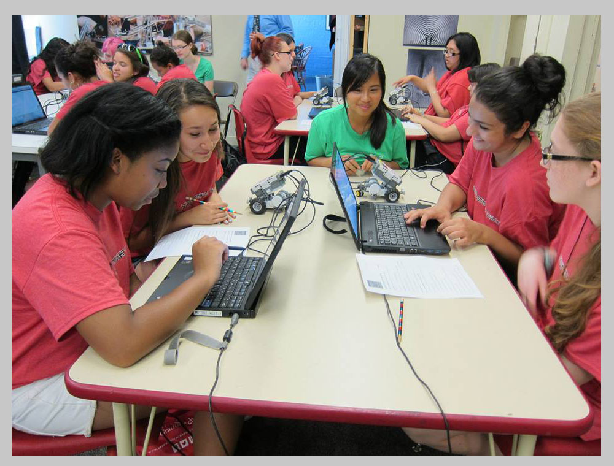

Welcome to Artemis!

What is Artemis?
The Artemis Project is a free, five-week summer day camp for rising 9th grade girls in the Providence area who are interested in learning about science and technology. Founded in 1996, the camp has traditionally been run by four undergraduate women from Brown University in connection with Brown's Computer Science Department.
By teaching students computer skills, programming, and computer science concepts through engaging activities, the Artemis Project encourages young women to join the field of computer science.
Announcements
We could not be more excited to meet you all at the Cookie Party! It's this Friday, June 12, at 7 p.m., in the Brown University CIT. You can find detailed directions here.
The Cookie Party is an opportunity for us -- Martha, Asha, Chelse, and Joanna, your four coordinators -- to meet the Artemis girls and parents; for you all to meet each other; for parents to fill out and sign some relevant forms (medical information, field trip permission slips...the boring stuff!); AND, most importantly, for everyone to eat a bunch of cookies!